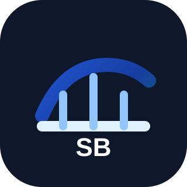

Kontrollü doküman alımı
Kontrollü demo akışında anonimleştirilmiş veya önceden onaylanmış ihale, RFP veya teknik şartname içeriği kullanılır. Public dosya yükleme açık değildir.

SpecBridge AIİhale Zekâsı ve Presales Karar Desteği
SpecBridge AI; ihale, şartname ve RFP dokümanlarını analiz ederek satış, presales, teknik ve yönetici ekipleri için yapılandırılmış karar destek raporları üretir.
Sadece teknik uyumluluk matrisi üretmez. Teknik uyum, teklif ver / verme hazırlığı, ticari risk, hukuki/idari risk, vendor bias, açıklama soruları ve aksiyon planlarını değerlendirmeye yardımcı olur.
Kontrollü demo ve pilot hazırlık aşaması. Henüz production SaaS servisi değildir.
Ürün Akışı
SpecBridge AI, parçalı ihale inceleme işlerini yapılandırılmış, tekrarlanabilir ve gözden geçirilebilir bir karar paketine dönüştürür.
Kontrollü demo akışında anonimleştirilmiş veya önceden onaylanmış ihale, RFP veya teknik şartname içeriği kullanılır. Public dosya yükleme açık değildir.
Teknik, ticari, hukuki/idari, teslimat ve destekle ilgili riskler incelenir.
Teklif ver / verme hazırlığı, gap’ler, uyumluluk sinyalleri ve açıklama soruları değerlendirilir.
Yönetici, teknik ve satış/presales rapor paketleri inceleme için üretilir.
Analiz Kapsamı
Rapor Profilleri
Yönetim incelemesi için karar özeti, teklif ver / verme sinyali, ana riskler, temel gap’ler ve aksiyon planı.
Madde bazlı uyumluluk, teknik uyum, ürün eşleştirme, kanıt gereksinimleri ve mimari riskler.
Fırsat yeterliliği, müşteri soruları, ticari risk, konumlandırma riskleri ve presales aksiyonları.
Kullanım Alanları
Görünür teknik, ticari ve teslimat risk sinyalleriyle fırsat kararlarını daha erken verin.
Teknik ve idari isterleri incelenebilir çıktılara ve aksiyon kalemlerine dönüştürün.
Lock-in dilini tespit edin; itiraz ve açıklama süreçleri için tarafsız yeniden yazım önerileri hazırlayın.
Örnek Raporlar
Örnek raporlar yalnızca anonimleştirilmiş demo senaryoları ile yayınlanır. Gerçek müşteri dokümanları açık onay ve hukuki/güvenlik hazırlığı olmadan kullanılmamalıdır.
Public anonim örnek
Bu paket yalnızca sentetik bir senaryo kullanır. Gerçek müşteri verisi, gerçek ihale dokümanı, kişisel veri veya gizli vendor fiyatı içermez.
Güvenlik ve Gizlilik
İhale ve RFP dokümanları hassas ticari, teknik ve hukuki bilgiler içerebilir. Pilot kullanım kontrollü veri yönetimi, açık saklama kuralları ve net silme politikası gerektirir.
Kontrollü Pilot
SpecBridge AI şu anda kontrollü demo ve pilot hazırlık aşamasındadır. Bu iletişim alanı, gizlilik, KVKK ve backend süreçleri tamamlanana kadar statiktir; lütfen web sitesi üzerinden gizli dosya göndermeyin.